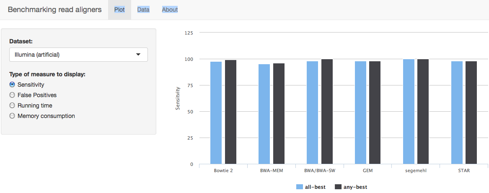

About
- aligning reads from NGS experiments is an important computational task
- benchmarking of read
aligners
is therefore necessary for non-experts to decide on
the "best" tool for their specific task - done as part of my publication (Otto et al., 2014)
Christian Otto
Bioinformatics Group, University of Leipzig, Germany
Dimensions of the benchmarking results (current extent in parenthesis):
Already with the existing numbers, there would be 9 * 4 * 3 = 108 possible figures.
That's one hell of a boring supplement.
(I know there are tricks to combine some of them together - as I did in the supplement but this will not solve the problem.)
